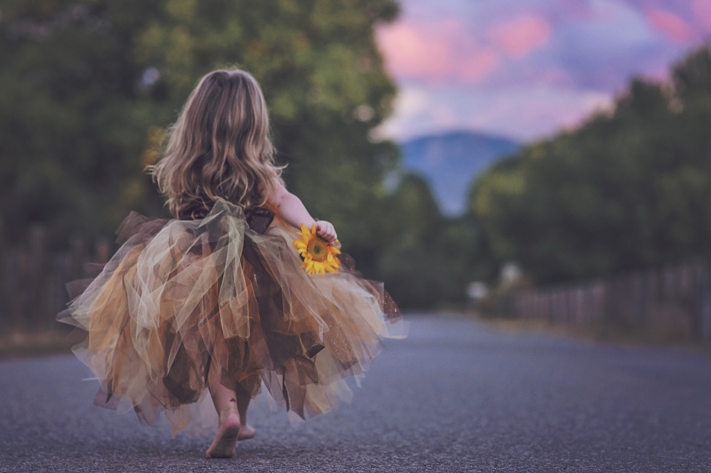

Наша цель:
Заложить настолько правильные основы
воспитания и обучения детей, чтобы они могли
превзойти своих родителей и изменить мир к лучшему!
Что можно назвать вторым домом для малыша?
Недолго думая, ответим: детский сад.
Только здесь начинается формирование личности,
закладываются основы тех знаний,
которые вскоре понадобятся ребенку для учебы.
Если детский сад – это второй дом,
тогда воспитатели – это вторые родители.
Им принадлежит огромное значение в жизни детей.
Не секрет, что для гармоничного развития ребенка
необходимо, чтобы родители много занимались с ним
от самого рождения. Но что делать,
если мама и папа не могут уделить своему малышу
достаточно времени из-за насыщенного графика работы?
В этой ситуации главными помощниками становятся
именно воспитатели детского сада.
Известно, что идеальным временем для закладывания
основных навыков, знаний и умений человека,
раскрытия талантов и формирования характера
является период первых трех лет жизни человека.

Имя Фамилия
В следующем примере показано, как это сделать;
Используйте элемент html (элемент html всегда имеет высоту
окна браузера). Затем установите на нем фиксированный и
центрированный фон.

Имя Фамилия
В следующем примере показано, как это сделать;
Используйте элемент html (элемент html всегда имеет высоту
окна браузера). Затем установите на нем фиксированный и
центрированный фон.

Имя Фамилия
В следующем примере показано, как это сделать;
Используйте элемент html (элемент html всегда имеет высоту
окна браузера). Затем установите на нем фиксированный и
центрированный фон.
Имя Фамилия
В следующем примере показано, как это сделать;
Используйте элемент html (элемент html всегда имеет высоту
окна браузера). Затем установите на нем фиксированный и
центрированный фон.

Имя Фамилия
В следующем примере показано, как это сделать;
Используйте элемент html (элемент html всегда имеет высоту
окна браузера). Затем установите на нем фиксированный и
центрированный фон.

В Зоопарке :
- Папа, что - то горилла очень зло на нас посмотрела.
- Спокойно ,доченька, это ещё только касса.